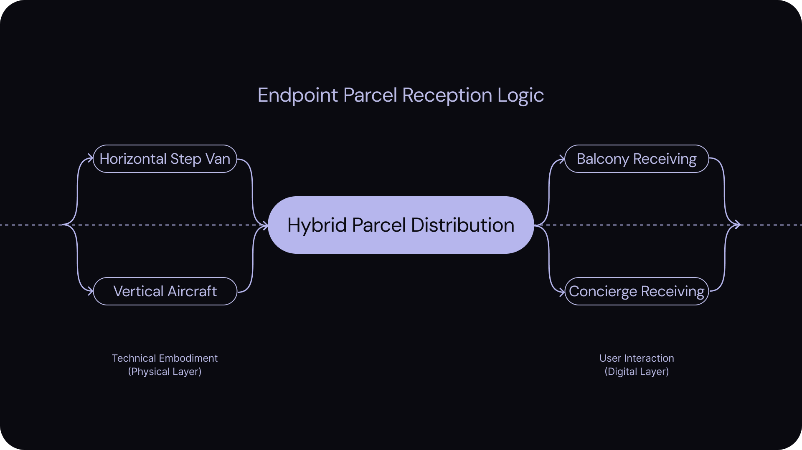
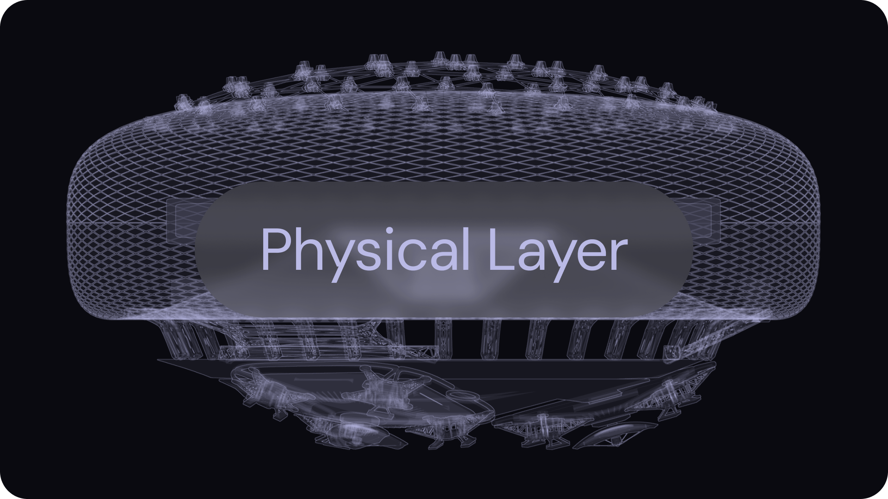

As a sub-project of my ongoing 2025-26 thesis, I have developed a hypothetical service platform that materializes the main theme, 'Interconnective Digital and Physical Experience.' I have conducted foundational research to establish the rationale for this project and to validate its necessity within the broader scope of the study.

UI/UX Design, HAX Design
December 21th, 2025 - December 28st, 2025
(1 week)
Hybrid Data Management Platform
Redesign of the Interaction Design Project (2023)
Web/App design

urban logistics toronto
A hypothetical service platform that materializes the main theme, 'Interconnective Digital and Physical Experience.'

Problem Framing
This phase involved defining the core challenges in current data management systems. By analyzing user behaviors and existing solutions, I identified key areas where digital and physical experiences were fragmented, setting the stage for a unified platform intervention.
BACKGROUND

GENERATIVE QUESTIONS
The project was designed under the framework of HAX Design, focusing on how users interact with the platform and identifying which elements facilitate efficient user data management. This approach establishes a foundational premise for optimizing the synergy between user input and AI-driven data processing.

MARKET RESEARCH
Focused on the emerging trend of AI-driven data management discovered during my thesis, this research defines the market potential and justifies the project’s development. I have analyzed key future indicators to demonstrate why this project is essential for the evolving landscape of digital-physical experiences.
BUSINESS MODEL
The project's design solutions are currently optimized for B2C scenarios, prioritizing low-volume data management and seamless daily interactions. While the current scope focuses on individual users, the framework is built for scalability. I anticipate that following successful user-level validation, the project will evolve into a B2B model, offering a roadmap for collective data management in the future.

Problem Discovery
The initial phase involved identifying the disconnect between physical experiences and digital data records. Users often struggle to manage the vast amount of data generated daily, leading to information overload and loss of meaningful context. This stage focused on pinpointing these pain points to inform the system's architecture.

Solution Validation
To address the identified issues, I proposed a hybrid model that utilizes AI to categorize and process data automatically. The solution was validated through low-fidelity prototypes and user testing, ensuring that the backend logic effectively supports the user's needs without overwhelming them with complexity.

Onboarding & Setup
The entry point of the application focuses on establishing a secure and personalized user environment. The interface guides users through initial configuration, ensuring that their digital profile accurately reflects their physical context.

Data Collection Interface
This interface facilitates the seamless input of physical data. Designed with large, accessible touch targets and clear visual feedback, it minimizes the friction often associated with manual data entry.

Dashboard & Visualization
The central hub of the platform where processed data is visualized. Users can view real-time metrics and historical trends, allowing for immediate understanding of their 'Interconnective Experience' status.

AI Analysis & Insights
Here, the system presents AI-driven analysis of the collected data. It highlights patterns and anomalies, offering actionable insights that bridge the gap between raw data and meaningful understanding.

System Settings & Management
The management view allows users to configure data sources and privacy preferences. It ensures users maintain full control over their data lifecycle and integration with other services.
Visualization - Concept Rendering
This concept was implemented using Blender3d and SolidWorks. Through this process, we verified the technical feasibility and interaction elements, demonstrating concretely how the service can be realized in a physical stage.